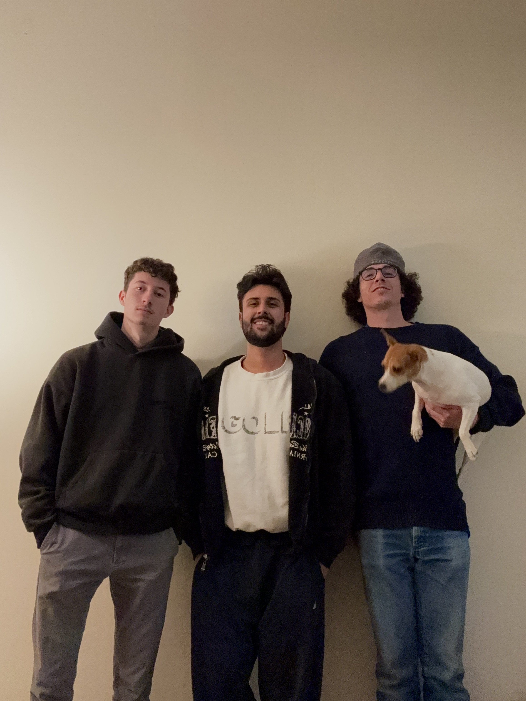

Project Resources

- Problem Domain Book: Learning Python Design Patterns [Link]
- Reference Websites:
- Technical Articles:
- Upcoming Events: Campus Laser Show, 04/23/2024 @ Lawlor
Project Inspiration
This project is inspired by the L.A.S.E.R. Tag system, a high-powered laser tagging setup utilized by Dutch graffiti artists on a Hymermobil vehicle. It explores the potential of future handheld lasers envisioned by defense contractors. This innovative approach to graffiti, involving collaboration among various individuals and organizations, highlights the evolving intersection of technology and street art.
Learn more about L.A.S.E.R. TagImages